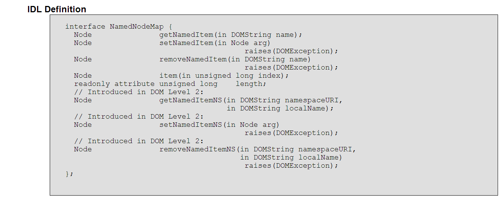

JavaScript Temelleri
Bölüm 19
W3C Belge Nesne Modeli (W3C Document Object Model) (W3C-DOM)
Bölüm 19.6.4 Sayfa 1
19.6.4 - NamedNodeMap Arabirimi
NamedNodeMap arabirimi, dinamik bir koleksiyon nesnesidir. Bu koleksiyonun elemanlarının yerleşiminin belirli bir sıralama yöntemi yoktur. Bu topluluğun elemanlarına istenirse sırası birbirini izleyen tamsayı ordinal indislerle erişlebildiği gibi, ismleri kullanılarak, getNamedItem()() setNamedItem()(), removeNamedItem()() metotları ile de erişilebilir.
NamedNodeMap koleksiyonları, sayfa yapısı yenilendiğinde güncellenir ve length özelliğinin değeri, güncel içeriğini yansıtacak şekilde yenilenir.
NamedNodeMap arabiriminin özellik ve metotları, hem koleksiyon listesinde bulunan elemanlara erişim, hem de koleksiyon listesindeki elemanların niteliklerini değiştirme, hem de koleksiyon listesine yeni elemanlar eklenmesi için kullanılabilirler. Bu arabirimin W3C-DOM Level-2 CORE spesifikasyonundaki tanımı aşağıda görülmektedir:

Şekil 19.6.4 - 1 - DOM Düzey 2 de NamedNodeMap Arabiriminin IDL Yazılımı
NamedNodeMap arayüzü ile tanımlanan yapıya uygun yapıdaki bir nesne sınıfı, Array (dizi) nesne sınıfı yapısına benzer bir yapısı olan bir nesne sınıfıdır. Bu nesne sınıfının dizi nesne sınıfı gibi toplam eleman sayısını veren bir length özelliği bulunmaktadır.
Dizi nesne sınıfına benzerlikleri nedeni ile, NamedNodeMap toplulukları, örneğinde olduğu gibi, dizi nesne örnekleri gibi çalışılabilir. Fakat, bu çalışma yöntemi, spesifikasyonda öngörülmemiştir. NamedNodeMap topluluk örnekleri, dizi değildir ve nesne yapıları dizilerdeki metotlardan yoksundur. Bu topluluk örnekleri, diziler gibi değil, kendi özellik ve metotlarından yararlanılarak çalışılmalıdır. Spesifikasyonda öngörülen ve gelecekte de desteklenecek olan yöntemler bu yöndedir.
NamedNodeMap topluluklarından sadece, bir element düğümünün niteliklerine erişim için yaralanılmaktadır. Fakat, ileride görülecek olan Element tipi düğüm arabiriminde tanımlanan getAttribute() ve setAttribute() metotları daha kullanışlı oldukları için, bir Element tipi düğümlerin niteliklerine erişim ve güncelleme için pratikte hemen hemen sadece getAttribute() ve setAttribute() metotları kullanılmaktadır.
Bu metot geriye bir Node(Düğüm) sınıfı nesne örneği döndürür. Kullanımı,
NamedNodeMapNesneSınıfıÖrneği.getNamedItem(DOMString tipinde düğüm ismi)
şeklindedir. Düğüm ismi, düğümün id değeridir.
Bu konudaki bir program aşağıda görülmekte ve bağlantılı olduğu sayfada çalışmaktadır.
/* <![CDATA[ */ function başlat() { var refDüğüm = document.getElementById('hedef'); sonuçYaz('Koleksiyon Uzunluğu : ', refDüğüm.attributes.length + ' ; ' , 'sonuç'); sonuçYaz('title nitelik değeri : ' , refDüğüm.attributes.getNamedItem('title').nodeValue, 'sonuç'); } sayfaYüklenmesiTamamlandıktanSonraÇalıştır(başlat); /* ]]> */
Yukarıdaki program, tam olarak çalışmasına karşın, aynı işlev,
... sonuçYaz('title nitelik değeri : ' , refDüğüm.getAttribute('title'), 'sonuç'); ...
bildirimi ile gerçekleştirilebildiğinden, NamedNodeMap koleksiyonlarının pratikte uygulanma şansları hiç yok gibidir.
Bu metot tüm belge ağacında geçerli olacak yeni bir eleman ismi bildirimi yapmaktadır. Uygulamada, bu işlemin anlamı, eleman düğümüne yeni bir nitelik (eleman düğümünün (X)HTML spesifikasyonunda belirtilen niteliklerine ek olarak yeni bir nitelik ismi) bildirimi yapmak anlamına gelmektedir. (X)HTML sayfalarında ise, sayfa elemanlarının türüne göre, geçerli olabilecek tüm nitelik isimleri zaten W3C (X)HTML spesifikasyonlarında ve belge çözümleyiciye özgü özel nitelikler listesinde belirtilmiş olduğundan, yeni bir nitelik spesifikasyonlarda belirtilmemiş olacağından işlevsel olmayacaktır. Spesifikasyonlarad bulunan nitelik isminin de setNamedItem() metodu ile yeniden tanımlanması da anlamsızdır. Bu nedenle, NamedNodeMap arabiriminin setNamedItem() metodunun, (X)HTML sayfalarında tek faydalı işlevi, spesifikasyonda bulunan bir nitelik isminin değeri ile birlikte yeniden tanımlanması durumunda, belirtilen element düğümünün eski niteliğinin yeni değere sahip olacağıdır.
Bu konudaki bir program aşağıda görülmekte ve bağlantılı olduğu sayfada çalışmaktadır.
/* <![CDATA[ */ function başlat() { var refDüğüm = document.getElementById('hedef'), yeniNitelik = document.createAttribute('title'); yeniNitelik.nodeValue = 'Bu Sayfa Bedri Doğan Emir Tarafından Yazılmıştır !'; sonuçYaz('Koleksiyon Uzunluğu : ', refDüğüm.attributes.length, 'sonuç1'); for (var i = 0; i <refDüğüm.attributes .length ; i ++) { sonuçYaz('Nitelik Adı : ' , refDüğüm.attributes.item(i).nodeName, 'sonuç2'); sonuçYaz('Nitelik Değeri : ' , refDüğüm.attributes.item(i).nodeValue, 'sonuç2'); document.getElementById('sonuç2').appendChild(document.createElement('BR')); } refDüğüm.attributes.setNamedItem(yeniNitelik); sonuçYaz('Koleksiyon Uzunluğu : ', refDüğüm.attributes.length, 'sonuç3'); for (var i = 0; i < refDüğüm.attributes .length ; i ++) { sonuçYaz('Nitelik Adı : ' , refDüğüm.attributes.item(i).nodeName, 'sonuç4'); sonuçYaz('Nitelik Değeri : ' , refDüğüm.attributes.item(i).nodeValue, 'sonuç4'); document.getElementById('sonuç4').appendChild(document.createElement('BR')); } sayfaYüklenmesiTamamlandıktanSonraÇalıştır(başlat); /* ]]> */
Yukarıdaki program, tam olarak çalışmasına karşın, aynı işlev,
... refDüğüm.setAttribute('title') = 'yeni değer ...'; ...
bildirimi ile gerçekleştirilebildiğinden, NamedNodeMap koleksiyonlarının pratikte uygulanma şansları hiç yok gibidir.
İsminden de anlaşılabileceği gibi, bu metot, belirli bir NamedNodeMap koleksiyonundan belirli düğümleri kaldırır. Bu işlem bir element düğümünün belirli niteliklerinin kaldırılması ile eş anlamlıdır. Kullanımı,
NamedNodeMapNesneSınıfıÖrneği.getNamedItem(DOMString tipinde düğüm ismi)
Bu metot geriye kaldırılan elemanın ismini (nodeName) döndürür. Eğer kaldırılmak istenen elemanın değeri tanımlı değilse null değeri döndürülür. Eğer kaldırılmak istenen eleman bu
- Eğer, kaldırılan nitelik, spesifikasyonda öndeğer verilerek tanımlanmış bir nitelik ise, değeri öndeğeri ile güncellenerek yeniden aktive olur. Eğer bir NamedNodeMap koleksiyonundan kaldırılmak istenen eleman bu koleksiyonda tanımlı değilse hata oluşur.
Bu konudaki bir program aşağıda görülmekte ve bağlantılı olduğu sayfada çalışmaktadır.
/* <![CDATA[ */ function başlat() { var refDüğüm = document.getElementById('hedef'); sonuçYaz('Koleksiyon Uzunluğu : ', refDüğüm.attributes.length, 'sonuç1'); for (var i = 0; i < refDüğüm.attributes .length ; i ++) { sonuçYaz('Nitelik Adı : ' , refDüğüm.attributes.item(i).nodeName, 'sonuç2'); sonuçYaz('Nitelik Değeri : ' , refDüğüm.attributes.item(i).nodeValue, 'sonuç2'); document.getElementById('sonuç2').appendChild(document.createElement('BR')); } refDüğüm.attributes.removeNamedItem('title'); sonuçYaz('title Niteliği Kaldırıldı ! : ', 'sonuç3'); sonuçYaz('Koleksiyon Uzunluğu : ', refDüğüm.attributes.length, 'sonuç4'); for (var i = 0; i <refDüğüm.attributes .length ; i ++) { sonuçYaz('Nitelik Adı : ' , refDüğüm.attributes.item(i).nodeName, 'sonuç5'); sonuçYaz('Nitelik Değeri : ' , refDüğüm.attributes.item(i).nodeValue, 'sonuç5'); document.getElementById('sonuç5').appendChild(document.createElement('BR')); } sayfaYüklenmesiTamamlandıktanSonraÇalıştır(başlat); /* ]]> */
Yukarıdaki program, tam olarak çalışmasına karşın, aynı işlev,
... refDüğüm.removeAttribute('title'); ...
bildirimi ile gerçekleştirilebildiğinden, NamedNodeMap koleksiyonlarının pratikte uygulanma şansları hiç yok gibidir.
Bu metot NamedNodeMap koleksiyonunda erişilen item (birim) i döndürür. Eğer erişim için uygulanmak istenen indis koleksiyonda bulunan birim sayısından yüksekse, geriye null değeri döndürülür.
Bir NamedNodeMap koleksiyonunda, elemanlar item (birim) ler halinde yerleştirilmiştir. Toplam biri sayısını koleksiyonun length özelliği döndürmektedir. Koleksiyonun içeriği sayfadaki değişikleri izleyerek güncellenir ve her zaman en güncel koleksiyon uzunluğu ve içeriği ile çalışılır.
Koleksiyon içindeki birimler bitişik sürekli fakat belirli bir sıraya bağlı olmadan dizilmişlerdir. Diziliş sırası JavaScript yorumlayıcısına göre farklılık gösterir. Koleksiyon içindeki birimlere, sıfırdan başlayan tamsayı ordinal indislerle erişilebilir. Bu konuda, gerek NodeList koleksiyonlarında, gerekse NamedNodeMap koleksiyonlarında çok sayıda örnek verilmiştir.
Bu özellik geriye koleksiyondaki birimlerin sayısı olan bir tamsayı değerini döndürür. Aynı özellik, dizilerde sık sık kullanılan özellik ile aynı işlevi yapmaktadır. Koleksiyonda, birimlere erişim için geçerli indislerin aralığı, 0 dan (length - 1) (dahil) değerleri arasındadır. Yani, 0 < geçerliİndis < (length - 1) dir.